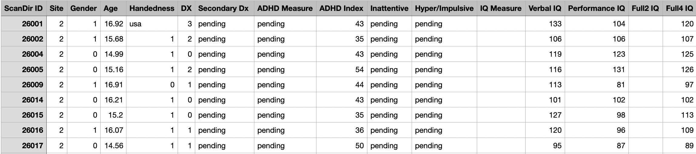

Data gathering
Data for ADHD detection
How to detect ADHD
- We can participants' personal characteristic data (site of data collection, age, gender, handedness, performance IQ, verbal IQ, and full scale IQ), without any fMRI data, as input to a supervised learning model to generate diagnostic prediction.
About the Data
Data Science questions we would like to focus on
- Investigate which variables (e.g., Age, Gender, Inattentive scores, Hyper/Impulsive scores) are most strongly correlated with the ADHD Index or the DX (Diagnosis) variable.
- Analyze if there are significant differences in ADHD symptoms (Inattentive, Hyper/Impulsive scores) based on gender or age groups.
- Explore the relationship between different IQ scores (Verbal, Performance, Full4) and ADHD symptoms. Does lower or higher IQ correlate with the severity of ADHD symptoms? Assess if there is a link between handedness and ADHD diagnosis or symptom severity.
- Examine if there are differences in ADHD diagnosis rates or symptom profiles across different sites. This could indicate variability in diagnostic criteria or population differences.
- Develop a predictive model to determine the likelihood of ADHD diagnosis based on the available variables. Machine learning techniques can be employed for this.
- Perform cluster analysis to identify distinct patterns or subtypes of ADHD symptoms within the dataset.
- If the data is longitudinal, analyze how ADHD symptoms change over time in individuals. Compare the ADHD Index with the actual diagnosis (DX) to assess how well the index reflects clinical diagnoses.
- Identify any outliers or anomalies in the data that might indicate errors in data collection or unique cases.
Results

Link to the raw data
Link to the API code in python
Link to the API code in R
Conclusion
The collected data includes behavioral observations, psychological assessments, medical history, brain imaging studies, genetic information, and other relevant data. Advanced statistical methods or machine learning algorithms may be used to identify patterns or correlations.
Definition
Data gathering in data science is a critical process that involves collecting, measuring, and analyzing accurate information from various sources to form a comprehensive dataset for further analysis and decision-making. This process is foundational in data science, as the quality and relevance of the data collected directly impact the insights and conclusions that can be drawn.